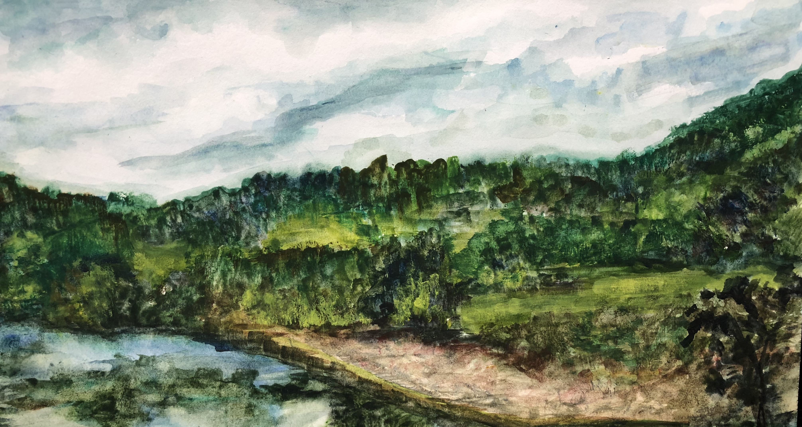
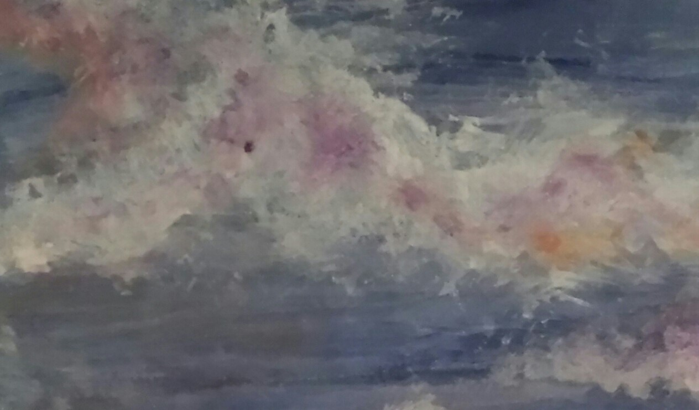
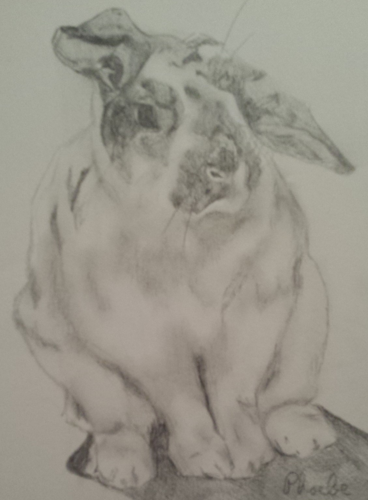

Welcome!
Welcome to Danah's Art Portfolio! Here you will find a collection of my different art projects. I experiment with many different artistic mediums, including watercolors, acrylics, fabric, and pencil.
Please feel free to explore a sample of my work below!
Gallery
  
Art has been a hobby of mine since I was little. I am not professionally trained, but I have dedicated a lot of time to practicing and just enjoying the experience.
Thank you for visiting my website!